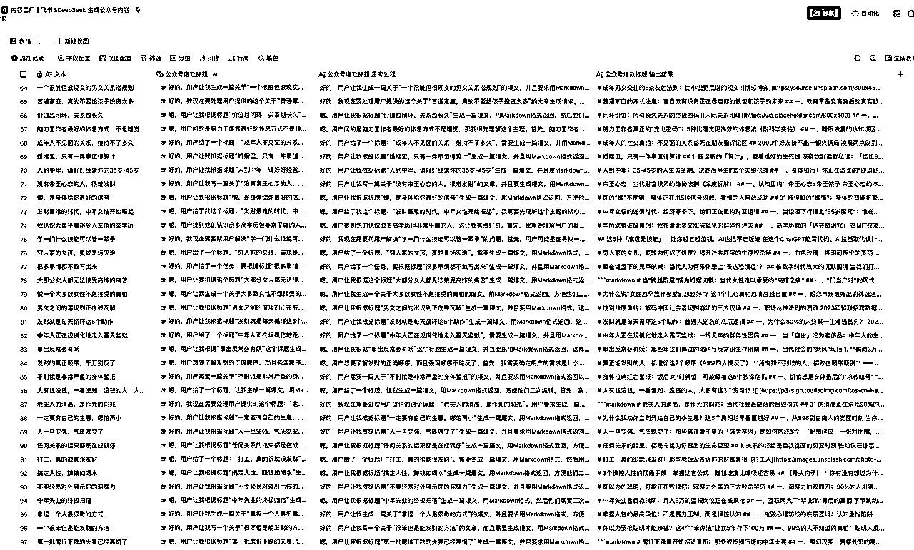
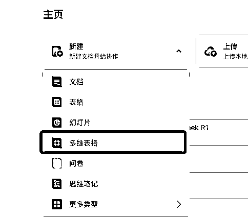
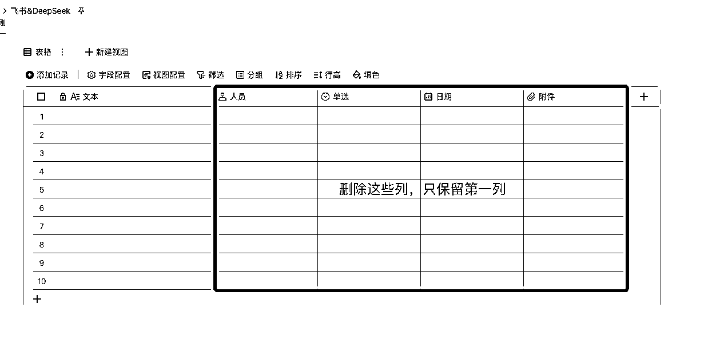
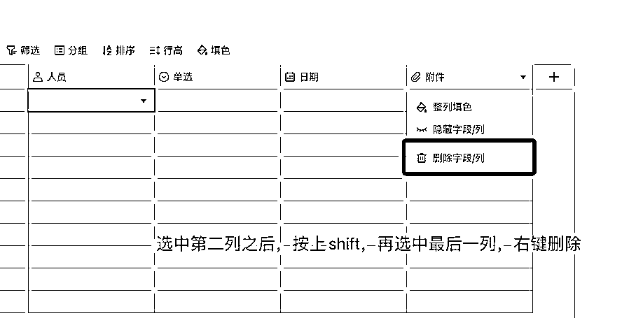
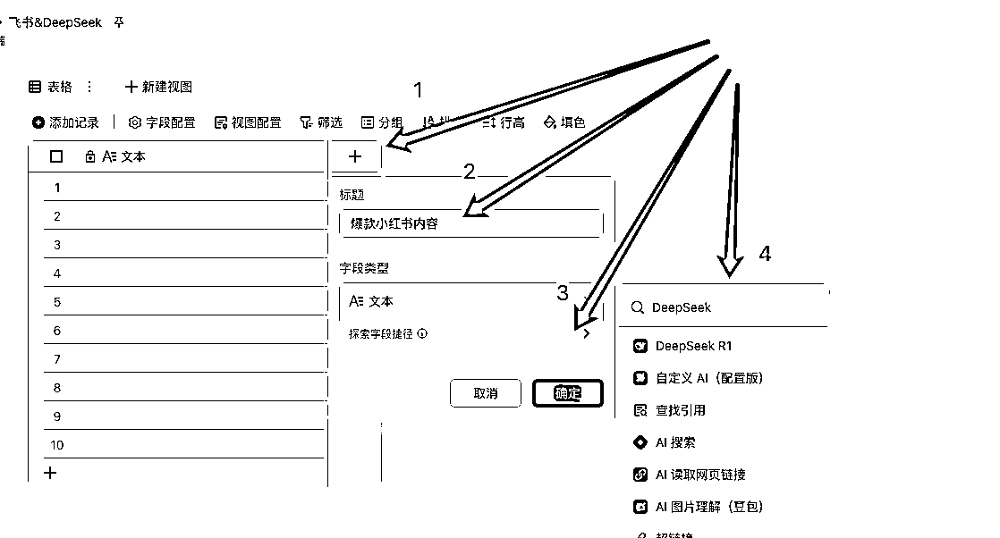
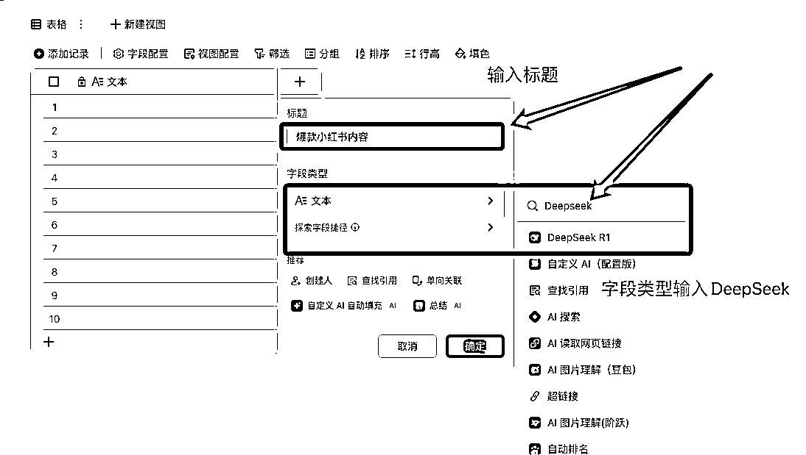
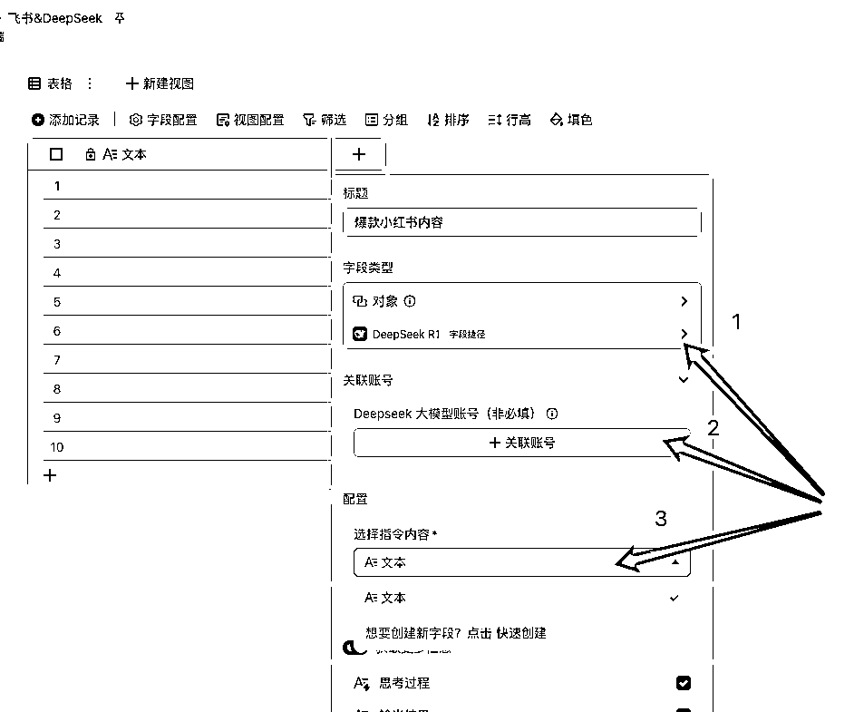
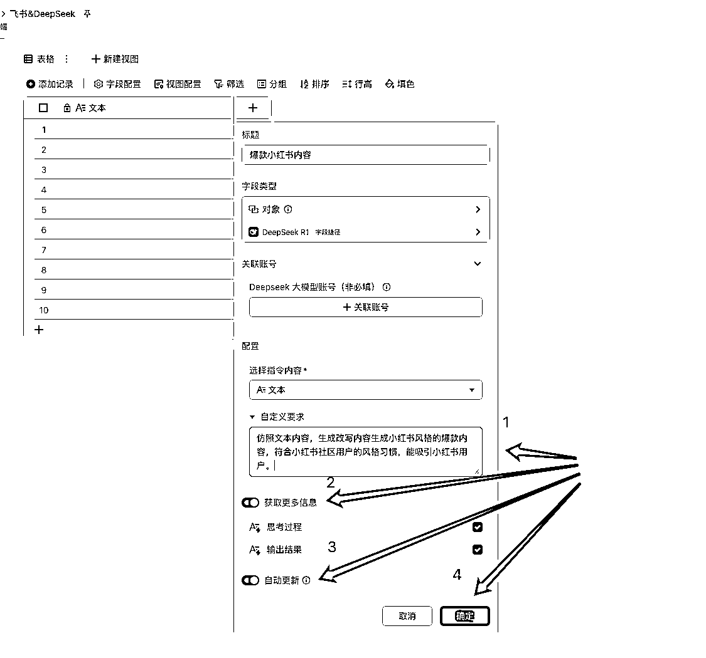
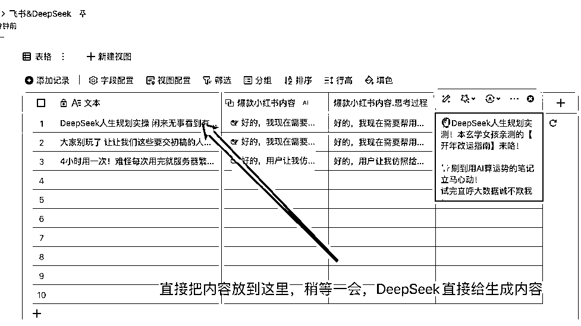
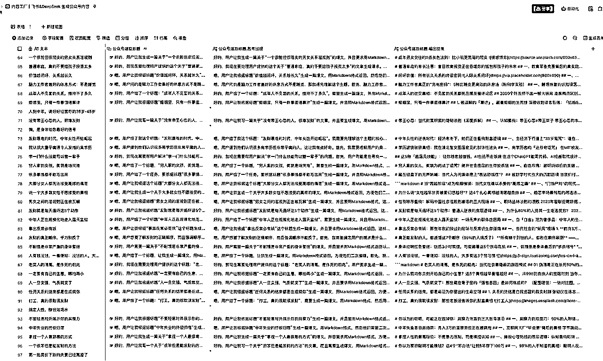

来源：https://svox0dxsvym.feishu.cn/docx/PeSPdjiOCoAWEmxIWtEcvTrXnEb
这两天看到很多大佬在宣传飞书多维表格结合DeepSeek R1生产内容，简直就是王炸级别呀。
我试了一下，简直就是内容生产机器。
先给大家看一下图

怎么做？直接上教程了。
一，创建飞书多维表格

创建飞书多维表格之后，保留第一列表格，其余表格全部删除



操作步骤


操作步骤

操作步骤

至此整个自动生产内容的流程介绍完毕，大家快去试试吧！
我找了一批公众号爆款标题，然后生成了一批内容
